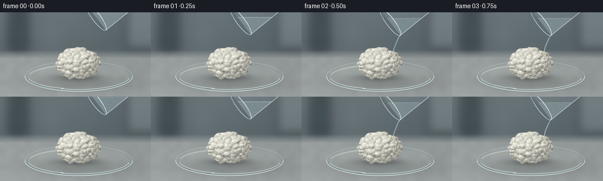
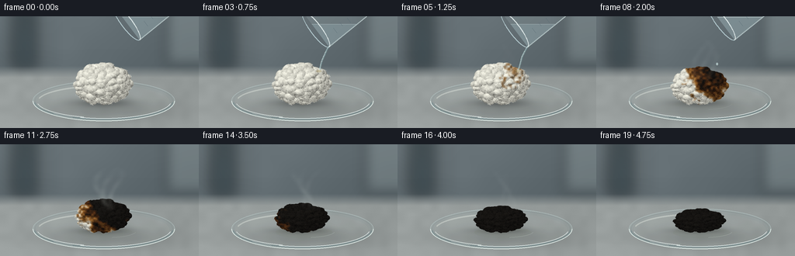

CODING AGENTS AS PIXEL WORLD MODELS
traex/GPT-6.1-Sol · phygen_154
点击播放 · 原生 RGB 像素
逐轮保存的候选
回放视频、检查图与代码变化。
每份候选均可单独播放。实际图片检查记录在下方工具轨迹中。
候选 01播放与检查图
点击播放 · 原生 RGB 像素


展开代码变化
--- 上一保存版本
+++ 本次保存版本
@@ -0,0 +1,267 @@
+from pathlib import Path
+import math
+import numpy as np
+from PIL import Image, ImageDraw, ImageFilter, ImageFont
+import artifact_io
+
+ROOT=Path(__file__).resolve().parent
+W,H,S=256,144,3
+SW,SH=W*S,H*S
+rng=np.random.default_rng(154)
+Y,X=np.mgrid[0:SH,0:SW].astype(float)/S
+
+def noise_grid(w,h,blur=0):
+ im=Image.fromarray(np.uint8(rng.random((h,w))*255)).resize((SW,SH),Image.Resampling.BICUBIC)
+ if blur: im=im.filter(ImageFilter.GaussianBlur(blur*S))
+ return np.asarray(im,dtype=float)/255
+
+fine=noise_grid(SW,SH)
+medium=noise_grid(90,50)
+large=noise_grid(24,15)
+slow=noise_grid(10,6)
+
+# A softly defocused laboratory work surface, lit from the upper left.
+wall=np.zeros((SH,SW,3),float)
+for c,b in enumerate([92,103,108]):
+ wall[:,:,c]=b+14*np.exp(-((X-74)/114)**2)-.10*Y+3*(slow-.5)
+wall_im=Image.fromarray(np.uint8(np.clip(wall,0,255)))
+bg=Image.new('RGBA',(SW,SH)); d=ImageDraw.Draw(bg)
+d.rounded_rectangle((15*S,-10*S,49*S,69*S),radius=9*S,fill=(37,51,57,140))
+d.rectangle((21*S,-6*S,42*S,18*S),fill=(25,35,39,120))
+d.rectangle((214*S,-10*S,263*S,63*S),fill=(170,184,184,65))
+d.line((63*S,0,63*S,65*S),fill=(168,181,184,70),width=4*S)
+bg=bg.filter(ImageFilter.GaussianBlur(8*S)); wall_im=Image.alpha_composite(wall_im.convert('RGBA'),bg).convert('RGB')
+wall=np.asarray(wall_im,dtype=float)
+blend=np.clip((Y-64)/15,0,1)
+bench=np.zeros_like(wall)
+for c,b in enumerate([147,153,152]):
+ bench[:,:,c]=b+12*(Y/144)+6*(large-.5)+1.5*(fine-.5)-8*(X/256)
+base=wall*(1-blend[:,:,None])+bench*blend[:,:,None]
+# Subtle contact shadow under the shallow watch glass.
+shadow=np.exp(-((X-137)/79)**2-((Y-120)/13)**2)
+base*=1-.20*shadow[:,:,None]
+base=Image.fromarray(np.uint8(np.clip(base,0,255))).convert('RGBA')
+
+def ellipse(d,box,fill=None,outline=None,width=1):
+ d.ellipse(tuple(v*S for v in box),fill=fill,outline=outline,width=max(1,int(width*S)))
+def line(d,pts,fill,width=1):
+ d.line([(x*S,y*S) for x,y in pts],fill=fill,width=max(1,int(width*S)),joint='curve')
+
+def dish(back=True):
+ lay=Image.new('RGBA',(SW,SH)); d=ImageDraw.Draw(lay)
+ if back:
+ ellipse(d,(42,83,225,135),fill=(169,194,195,29),outline=(199,223,223,124),width=.8)
+ ellipse(d,(45,85,222,132),outline=(73,111,118,68),width=.6)
+ ellipse(d,(48,89,218,130),fill=(204,218,212,25))
+ # A broad illumination reflected on the bottom of the glass.
+ d.arc(tuple(v*S for v in (48,89,218,130)),192,280,fill=(242,249,240,95),width=2*S)
+ else:
+ d.arc(tuple(v*S for v in (42,83,225,135)),0,180,fill=(230,244,239,210),width=1*S)
+ d.arc(tuple(v*S for v in (44,86,223,133)),3,176,fill=(83,122,128,118),width=1*S)
+ d.arc(tuple(v*S for v in (46,85,221,132)),10,110,fill=(248,255,253,172),width=1*S)
+ d.arc(tuple(v*S for v in (47,87,219,131)),107,170,fill=(242,253,250,164),width=1*S)
+ line(d,[(69,125),(79,128),(93,130)],(249,255,253,142),.6)
+ return lay
+
+# The cotton is a union of very small soft ellipsoidal tufts, not a smooth ball.
+cx,cy=132,87
+rx,ry,rz=34,24,29
+zmap=np.full((SH,SW),-100.0)
+def add_ellipsoid(px,py,pz,ax,ay,az):
+ xa=max(0,int((px-ax)*S)-2); xb=min(SW,int((px+ax)*S)+3)
+ ya=max(0,int((py-ay)*S)-2); yb=min(SH,int((py+ay)*S)+3)
+ q=1-((X[ya:yb,xa:xb]-px)/ax)**2-((Y[ya:yb,xa:xb]-py)/ay)**2
+ z=pz+az*np.sqrt(np.maximum(0,q))
+ z=np.where(q>=0,z,-100)
+ zmap[ya:yb,xa:xb]=np.maximum(zmap[ya:yb,xa:xb],z)
+add_ellipsoid(cx,cy,0,rx,ry,rz)
+for i in range(190):
+ az=rng.uniform(0,2*np.pi); zz=rng.uniform(-.08,1)
+ sr=np.sqrt(1-zz*zz)
+ nx,ny=sr*np.cos(az),sr*np.sin(az)
+ rr=rng.uniform(3.5,6.8)
+ add_ellipsoid(cx+rx*nx*.94,cy+ry*ny*.94,rz*zz*.90,rr*rng.uniform(.9,1.25),rr*rng.uniform(.7,1.05),rr)
+mask=zmap>-50
+# Smooth only subpixel surface seams; preserve the cotton's irregular contour.
+z0=np.where(mask,zmap,0)
+zm=np.asarray(Image.fromarray(z0.astype('float32'),'F').filter(ImageFilter.GaussianBlur(.7*S))) if False else z0
+# Precompute curved filaments tied to the same cotton material throughout the shot.
+fibers=[]
+for i in range(3300):
+ px=rng.uniform(cx-43,cx+43); py=rng.uniform(cy-32,cy+32)
+ ix=int(px*S); iy=int(py*S)
+ if not mask[iy,ix]:continue
+ theta=rng.uniform(0,np.pi*2); length=rng.uniform(.7,3.6)
+ curl=rng.uniform(-1,1)*1.2
+ vals=np.linspace(0,1,8)
+ xx=px+length*(vals-.5)*np.cos(theta)+curl*np.sin(vals*np.pi)*np.sin(theta)
+ yy=py+length*(vals-.5)*np.sin(theta)-curl*np.sin(vals*np.pi)*np.cos(theta)
+ fibers.append((px,py,xx,yy,rng.uniform(.35,1),rng.uniform(.12,.31)))
+
+# An irregular chemical front spreads from the wetted upper right of the cotton.
+def chemistry(x,y,t):
+ # Timelapse: wetting, caramel-brown dehydration, then deep black carbon.
+ distance=np.sqrt(((x-153)/1.0)**2+((y-70)/.92)**2)
+ xi=np.clip((x*S).astype(int),0,SW-1); yi=np.clip((y*S).astype(int),0,SH-1)
+ arrival=1.55+distance/16 + 1.7*(large[yi,xi]-.5)+.8*(medium[yi,xi]-.5)
+ return np.clip((t-arrival)/2.0,0,1)
+
+def palette(c):
+ white=np.array([233,232,219]); amber=np.array([149,99,44]); brown=np.array([71,39,18]); black=np.array([22,20,18])
+ a=np.clip(c*3,0,1)[...,None]; b=np.clip(c*3-1,0,1)[...,None]; e=np.clip(c*3-2,0,1)[...,None]
+ col=white*(1-a)+amber*a
+ col=col*(1-b)+brown*b
+ return col*(1-e)+black*e
+
+
+def cotton(t):
+ p=np.clip((t-2.5)/6.5,0,1)
+ # The white mass shrinks as cellulose is dehydrated; it does not explode.
+ sx=1-.12*p; sy=1-.43*p
+ floor=113
+ xx=(X-cx)/sx+cx
+ yy=(Y-floor)/sy+floor
+ ix=np.clip((xx*S).astype(int),0,SW-1); iy=np.clip((yy*S).astype(int),0,SH-1)
+ zz=zmap[iy,ix]; ma=zz>-50
+ zz=np.where(ma,zz,0)
+ # Derivative normal vectors for diffuse lighting of individual fluffy tufts.
+ gy,gx=np.gradient(zz,1/S,1/S)
+ norm=np.sqrt(gx*gx+gy*gy+1)
+ lam=np.maximum(0,(-gx*(-.43)-gy*(-.57)+.70)/norm)
+ c=chemistry(xx,yy,t)
+ texture=.86+.20*medium[iy,ix]+.10*(fine[iy,ix]-.5)
+ shade=(.56+.47*lam)*texture
+ col=palette(c)*shade[:,:,None]
+ # Charred fiber ridges and wet specular glints, with tiny granular pores.
+ porous=(fine[iy,ix]>.76)*(medium[iy,ix]<.43)
+ col*=1-(porous*.45*c)[:,:,None]
+ spec=np.maximum(0,lam-.88)**3*150*c
+ col+=spec[:,:,None]*np.array([1.0,.93,.81])
+ alpha=(ma*255).astype(np.uint8)
+ arr=np.dstack([np.uint8(np.clip(col,0,255)),alpha])
+ obj=Image.fromarray(arr,'RGBA')
+ f=Image.new('RGBA',(SW,SH)); d=ImageDraw.Draw(f)
+ for px,py,fx,fy,strength,width in fibers:
+ ch=float(chemistry(np.array(px),np.array(py),t))
+ # Lighter surface hairs separated by dark crevices in the blackened state.
+ color=palette(np.array(ch))
+ color=np.clip(color*(.72+.42*strength)+np.array([7,7,6])*ch,0,255)
+ rgba=tuple(int(v) for v in color)+(int(62+101*strength),)
+ pts=list(zip((fx-cx)*sx+cx,(fy-floor)*sy+floor))
+ line(d,pts,rgba,width)
+ obj=Image.alpha_composite(obj,f)
+ # Cotton's close contact shadow grows dense as it settles onto the glass.
+ sh=np.exp(-((X-cx)/(33*sx))**2-((Y-111)/(5.5-1.8*p))**2)*.32
+ return obj,sh
+
+
+def beaker(t):
+ # The beaker is tilted down and left; its rim and transparent wall are visible.
+ if t>5.25:return Image.new('RGBA',(SW,SH))
+ retreat=max(0,t-3.7)
+ dx=retreat*35; dy=-retreat*30
+ # Smooth entrance and tilt over the first two frames.
+ enter=max(0,1-t/.6)
+ dx+=enter*12; dy-=enter*9
+ mouth=np.array([151+dx,17+dy]); axis=np.array([.8,-.6]); cross=np.array([.6,.8]); R=28; L=69
+ def pos(s,r,z=0):
+ return mouth+axis*s+cross*r+axis*z
+ top0=pos(0,-R); top1=pos(0,R); bot0=pos(L,-R*.9);bot1=pos(L,R*.9)
+ lay=Image.new('RGBA',(SW,SH)); d=ImageDraw.Draw(lay)
+ poly=[tuple(top0*S),tuple(bot0*S),tuple(bot1*S),tuple(top1*S)]
+ d.polygon(poly,fill=(200,222,223,31))
+ # Colorless concentrated liquid has a horizontal free surface in a tilted glass.
+ verts=[top0,bot0,bot1,top1]
+ level=10+dy
+ clipped=[]
+ for a,b in zip(verts,verts[1:]+verts[:1]):
+ ina=a[1]>=level; inb=b[1]>=level
+ if ina: clipped.append(a)
+ if ina!=inb:
+ u=(level-a[1])/(b[1]-a[1]);clipped.append(a+u*(b-a))
+ if len(clipped)>2:
+ d.polygon([tuple(v*S) for v in clipped],fill=(183,211,216,80))
+ edge=sorted([v for v in clipped if abs(v[1]-level)<.01],key=lambda v:v[0])
+ if len(edge)==2: line(d,edge,(227,244,245,160),.7)
+ line(d,[top0,bot0],(234,249,249,175),1.1)
+ line(d,[top1,bot1],(233,247,245,206),1.1)
+ line(d,[top1+axis*2,bot1-axis*3],(75,111,121,115),.6)
+ line(d,[top0+cross*2+axis*3,bot0+cross*2],(255,255,251,85),1.4)
+ # Oblique mouth ellipse.
+ rim=[]
+ for theta in np.linspace(0,2*np.pi,100):
+ rim.append(tuple(mouth+cross*R*np.cos(theta)+axis*7*np.sin(theta)))
+ line(d,rim,(200,225,230,196),1)
+ front=[]
+ for theta in np.linspace(0,np.pi,50):front.append(tuple(mouth+cross*R*np.cos(theta)+axis*7*np.sin(theta)))
+ line(d,front,(245,254,252,211),1.2)
+ # Fine glass graduations on the flank.
+ for k in range(4):
+ c=pos(19+k*11,16)
+ line(d,[c-cross*4,c+cross*(1 if k%2 else 4)],(75,104,115,125),.5)
+ return lay
+
+
+def acid(t):
+ layer=Image.new('RGBA',(SW,SH));d=ImageDraw.Draw(layer)
+ if .6<=t<3.65:
+ start=np.array([168.,39.])
+ # Surface speed at the lip makes the viscous jet curve left as it falls.
+ pts=[]
+ for u in np.linspace(0,1,35):
+ xx=168-13*u+.45*np.sin(u*11+t*2)*u
+ yy=39+32*(.42*u+.58*u*u)
+ pts.append((xx,yy))
+ line(d,pts,(100,142,150,153),2.3)
+ line(d,[(x-.5,y) for x,y in pts],(237,251,247,175),.95)
+ line(d,[(x+.5,y) for x,y in pts],(199,225,220,113),.8)
+ ellipse(d,(151,69,158,72),fill=(128,109,54,90))
+ line(d,[(152,69.8),(154,70),(157,70.6)],(241,233,192,161),.65)
+ elif 3.65<=t<4.3:
+ u=(t-3.65)/.65
+ yy=43+31*u
+ ellipse(d,(155-.6,yy,156.8,yy+3.6),fill=(192,220,220,179),outline=(239,248,240,166),width=.35)
+ return layer
+
+
+def steam(t):
+ # Pale, translucent vapor rises in faint twisting wisps; there is no flame.
+ intensity=max(0,1-abs(t-5.5)/3.3)*.18
+ if intensity<=0:return Image.new('RGBA',(SW,SH))
+ cloud=np.zeros((SH,SW))
+ for k in range(3):
+ z=(90-Y)/62
+ center=131+k*8 + np.sin(z*5.5-t*.9+k)* (3+8*z)
+ wid=1.9+3.2*np.maximum(z,0)
+ plume=np.exp(-((X-center)/wid)**2)*np.clip(z*5,0,1)*np.clip((1-z)*2,0,1)
+ pulse=.6+.4*np.sin(z*12-t*2+k)**2
+ cloud+=plume*pulse
+ cloud*=intensity*(.5+.6*large)
+ cloud*=np.clip((90-Y)/12,0,1)
+ rgba=np.zeros((SH,SW,4),dtype=np.uint8);rgba[:,:,:3]=[223,232,224]
+ rgba[:,:,3]=np.uint8(np.clip(cloud*255,0,55))
+ return Image.fromarray(rgba,'RGBA').filter(ImageFilter.GaussianBlur(1.2*S))
+
+frames=[]
+for i in range(20):
+ # Five seconds of video condenses a longer physical reaction.
+ t=i*9.5/19
+ im=Image.alpha_composite(base,dish(True))
+ obj,sh=cotton(t)
+ a=np.asarray(im).copy();a[:,:,:3]=np.uint8(a[:,:,:3]*(1-sh[:,:,None]));im=Image.fromarray(a,'RGBA')
+ # Pooled acid catches a restrained cool glint at the base.
+ pudd=Image.new('RGBA',(SW,SH));pd=ImageDraw.Draw(pudd)
+ wet=np.clip((t-2)/5,0,1)
+ if wet>0:
+ ellipse(pd,(104-5*wet,106,166+6*wet,121),fill=(115,124,100,int(24*wet)))
+ pd.arc(tuple(v*S for v in (101,104,175,120)),10,80,fill=(235,245,232,int(90*wet)),width=1)
+ im=Image.alpha_composite(im,pudd)
+ im=Image.alpha_composite(im,obj)
+ im=Image.alpha_composite(im,dish(False))
+ im=Image.alpha_composite(im,steam(t))
+ im=Image.alpha_composite(im,acid(t))
+ im=Image.alpha_composite(im,beaker(t))
+ im=im.convert('RGB').resize((W,H),Image.Resampling.LANCZOS)
+ frames.append(np.asarray(im,dtype=np.uint8))
+artifact_io.save(np.stack(frames),ROOT)
+print('Saved',len(frames),'RGB frames.')
候选 02播放与检查图
点击播放 · 原生 RGB 像素
展开代码变化
--- 上一保存版本
+++ 本次保存版本
@@ -75,11 +75,11 @@
z=np.where(q>=0,z,-100)
zmap[ya:yb,xa:xb]=np.maximum(zmap[ya:yb,xa:xb],z)
add_ellipsoid(cx,cy,0,rx,ry,rz)
-for i in range(190):
+for i in range(320):
az=rng.uniform(0,2*np.pi); zz=rng.uniform(-.08,1)
sr=np.sqrt(1-zz*zz)
nx,ny=sr*np.cos(az),sr*np.sin(az)
- rr=rng.uniform(3.5,6.8)
+ rr=rng.uniform(2.4,4.9)
add_ellipsoid(cx+rx*nx*.94,cy+ry*ny*.94,rz*zz*.90,rr*rng.uniform(.9,1.25),rr*rng.uniform(.7,1.05),rr)
mask=zmap>-50
# Smooth only subpixel surface seams; preserve the cotton's irregular contour.
@@ -87,16 +87,16 @@
zm=np.asarray(Image.fromarray(z0.astype('float32'),'F').filter(ImageFilter.GaussianBlur(.7*S))) if False else z0
# Precompute curved filaments tied to the same cotton material throughout the shot.
fibers=[]
-for i in range(3300):
+for i in range(7000):
px=rng.uniform(cx-43,cx+43); py=rng.uniform(cy-32,cy+32)
ix=int(px*S); iy=int(py*S)
if not mask[iy,ix]:continue
- theta=rng.uniform(0,np.pi*2); length=rng.uniform(.7,3.6)
+ theta=rng.uniform(0,np.pi*2); length=rng.uniform(1.3,5.0)
curl=rng.uniform(-1,1)*1.2
vals=np.linspace(0,1,8)
xx=px+length*(vals-.5)*np.cos(theta)+curl*np.sin(vals*np.pi)*np.sin(theta)
yy=py+length*(vals-.5)*np.sin(theta)-curl*np.sin(vals*np.pi)*np.cos(theta)
- fibers.append((px,py,xx,yy,rng.uniform(.35,1),rng.uniform(.12,.31)))
+ fibers.append((px,py,xx,yy,rng.uniform(.35,1),rng.uniform(.10,.23)))
# An irregular chemical front spreads from the wetted upper right of the cotton.
def chemistry(x,y,t):
@@ -130,7 +130,7 @@
lam=np.maximum(0,(-gx*(-.43)-gy*(-.57)+.70)/norm)
c=chemistry(xx,yy,t)
texture=.86+.20*medium[iy,ix]+.10*(fine[iy,ix]-.5)
- shade=(.56+.47*lam)*texture
+ shade=((.80+.25*lam)*(1-c)+(.56+.47*lam)*c)*texture
col=palette(c)*shade[:,:,None]
# Charred fiber ridges and wet specular glints, with tiny granular pores.
porous=(fine[iy,ix]>.76)*(medium[iy,ix]<.43)
@@ -145,11 +145,33 @@
ch=float(chemistry(np.array(px),np.array(py),t))
# Lighter surface hairs separated by dark crevices in the blackened state.
color=palette(np.array(ch))
- color=np.clip(color*(.72+.42*strength)+np.array([7,7,6])*ch,0,255)
- rgba=tuple(int(v) for v in color)+(int(62+101*strength),)
+ color=np.clip(color*(.88+.28*strength)+np.array([7,7,6])*ch,0,255)
+ rgba=tuple(int(v) for v in color)+(int(82+111*strength),)
pts=list(zip((fx-cx)*sx+cx,(fy-floor)*sy+floor))
line(d,pts,rgba,width)
obj=Image.alpha_composite(obj,f)
+ fuzz=Image.new('RGBA',(SW,SH)); fd=ImageDraw.Draw(fuzz)
+ edge_rng=np.random.default_rng(459)
+ for j in range(850):
+ angle=edge_rng.uniform(0,2*np.pi)
+ # Trace the true irregular surface contour, then extend a loose fiber.
+ ux,uy=np.cos(angle),np.sin(angle)
+ rr=np.linspace(20,44,75)
+ tx=cx+rr*ux; ty=cy+rr*uy*.73
+ ok=mask[np.clip((ty*S).astype(int),0,SH-1),np.clip((tx*S).astype(int),0,SW-1)]
+ if not np.any(ok): continue
+ r=rr[np.flatnonzero(ok)[-1]]
+ px=cx+(r-.6)*ux;py=cy+(r-.6)*uy*.73
+ ch=float(chemistry(np.array(px),np.array(py),t))
+ leng=edge_rng.uniform(.7,2.6)*(1-.55*p)
+ cur=edge_rng.uniform(-.9,.9)
+ vals=np.linspace(0,1,7)
+ xx=px+ux*leng*vals-uy*cur*np.sin(vals*np.pi)
+ yy=py+uy*leng*vals+ux*cur*np.sin(vals*np.pi)
+ color=palette(np.array(ch))
+ pts=list(zip((xx-cx)*sx+cx,(yy-floor)*sy+floor))
+ line(fd,pts,tuple(int(v) for v in color)+(int(edge_rng.uniform(45,130)),),.13)
+ obj=Image.alpha_composite(obj,fuzz)
# Cotton's close contact shadow grows dense as it settles onto the glass.
sh=np.exp(-((X-cx)/(33*sx))**2-((Y-111)/(5.5-1.8*p))**2)*.32
return obj,sh
候选 03播放与检查图
可观测工具轨迹
实际执行的命令与返回图片。
命令 1exit 0
/bin/bash -lc 'ls -la && cat prompt.txt && cat GENERATION_RULES.md && cat task_spec.json'
命令 2exit 0
/bin/bash -lc "cat artifact_io.py && python - <<'PY' import PIL, numpy print(PIL.__version__) PY"
命令 3exit 0
/bin/bash -lc 'which ffmpeg || true; fc-list | head'
命令 4exit 0
/bin/bash -lc "cat > generate.py <<'PY'
from pathlib import Path
import math
import numpy as np
from PIL import Image, ImageDraw, ImageFilter, ImageFont
import artifact_io
ROOT=Path(__file__).resolve().parent
W,H,S=256,144,3
SW,SH=W*S,H*S
rng=np.random.default_rng(154)
Y,X=np.mgrid[0:SH,0:SW].astype(float)/S
def noise_grid(w,h,blur=0):
im=Image.fromarray(np.uint8(rng.random((h,w))*255)).resize((SW,SH),Image.Resampling.BICUBIC)
if blur: im=im.filter(ImageFilter.GaussianBlur(blur*S))
return np.asarray(im,dtype=float)/255
fine=noise_grid(SW,SH)
medium=noise_grid(90,50)
large=noise_grid(24,15)
slow=noise_grid(10,6)
# A softly defocused laboratory work surface, lit from the upper left.
wall=np.zeros((SH,SW,3),float)
for c,b in enumerate([92,103,108]):
wall[:,:,c]=b+14*np.exp(-((X-74)/114)**2)-.10*Y+3*(slow-.5)
wall_im=Image.fromarray(np.uint8(np.clip(wall,0,255)))
bg=Image.new('RGBA',(SW,SH)); d=ImageDraw.Draw(bg)
d.rounded_rectangle((15*S,-10*S,49*S,69*S),radius=9*S,fill=(37,51,57,140))
d.rectangle((21*S,-6*S,42*S,18*S),fill=(25,35,39,120))
d.rectangle((214*S,-10*S,263*S,63*S),fill=(170,184,184,65))
d.line((63*S,0,63*S,65*S),fill=(168,181,184,70),width=4*S)
bg=bg.filter(ImageFilter.GaussianBlur(8*S)); wall_im=Image.alpha_composite(wall_im.convert('RGBA'),bg).convert('RGB')
wall=np.asarray(wall_im,dtype=float)
blend=np.clip((Y-64)/15,0,1)
bench=np.zeros_like(wall)
for c,b in enumerate([147,153,152]):
bench[:,:,c]=b+12*(Y/144)+6*(large-.5)+1.5*(fine-.5)-8*(X/256)
base=wall*(1-blend[:,:,None])+bench*blend[:,:,None]
# Subtle contact shadow under the shallow watch glass.
shadow=np.exp(-((X-137)/79)**2-((Y-120)/13)**2)
base*=1-.20*shadow[:,:,None]
base=Image.fromarray(np.uint8(np.clip(base,0,255))).convert('RGBA')
def ellipse(d,box,fill=None,outline=None,width=1):
d.ellipse(tuple(v*S for v in box),fill=fill,outline=outline,width=max(1,int(width*S)))
def line(d,pts,fill,width=1):
d.line([(x*S,y*S) for x,y in pts],fill=fill,width=max(1,int(width*S)),joint='curve')
def dish(back=True):
lay=Image.new('RGBA',(SW,SH)); d=ImageDraw.Draw(lay)
if back:
ellipse(d,(42,83,225,135),fill=(169,194,195,29),outline=(199,223,223,124),width=.8)
ellipse(d,(45,85,222,132),outline=(73,111,118,68),width=.6)
ellipse(d,(48,89,218,130),fill=(204,218,212,25))
# A broad illumination reflected on the bottom of the glass.
d.arc(tuple(v*S for v in (48,89,218,130)),192,280,fill=(242,249,240,95),width=2*S)
else:
d.arc(tuple(v*S for v in (42,83,225,135)),0,180,fill=(230,244,239,210),width=1*S)
d.arc(tuple(v*S for v in (44,86,223,133)),3,176,fill=(83,122,128,118),width=1*S)
d.arc(tuple(v*S for v in (46,85,221,132)),10,110,fill=(248,255,253,172),width=1*S)
d.arc(tuple(v*S for v in (47,87,219,131)),107,170,fill=(242,253,250,164),width=1*S)
line(d,[(69,125),(79,128),(93,130)],(249,255,253,142),.6)
return lay
# The cotton is a union of very small soft ellipsoidal tufts, not a smooth ball.
cx,cy=132,87
rx,ry,rz=34,24,29
zmap=np.full((SH,SW),-100.0)
def add_ellipsoid(px,py,pz,ax,ay,az):
xa=max(0,int((px-ax)*S)-2); xb=min(SW,int((px+ax)*S)+3)
ya=max(0,int((py-ay)*S)-2); yb=min(SH,int((py+ay)*S)+3)
q=1-((X[ya:yb,xa:xb]-px)/ax)**2-((Y[ya:yb,xa:xb]-py)/ay)**2
z=pz+az*np.sqrt(np.maximum(0,q))
z=np.where(q>=0,z,-100)
zmap[ya:yb,xa:xb]=np.maximum(zmap[ya:yb,xa:xb],z)
add_ellipsoid(cx,cy,0,rx,ry,rz)
for i in range(190):
az=rng.uniform(0,2*np.pi); zz=rng.uniform(-.08,1)
sr=np.sqrt(1-zz*zz)
nx,ny=sr*np.cos(az),sr*np.sin(az)
rr=rng.uniform(3.5,6.8)
add_ellipsoid(cx+rx*nx*.94,cy+ry*ny*.94,rz*zz*.90,rr*rng.uniform(.9,1.25),rr*rng.uniform(.7,1.05),rr)
mask=zmap>-50
# Smooth only subpixel surface seams; preserve the cotton's irregular contour.
z0=np.where(mask,zmap,0)
zm=np.asarray(Image.fromarray(z0.astype('float32'),'F').filter(ImageFilter.GaussianBlur(.7*S))) if False else z0
# Precompute curved filaments tied to the same cotton material throughout the shot.
fibers=[]
for i in range(3300):
px=rng.uniform(cx-43,cx+43); py=rng.uniform(cy-32,cy+32)
ix=int(px*S); iy=int(py*S)
if not mask[iy,ix]:continue
theta=rng.uniform(0,np.pi*2); length=rng.uniform(.7,3.6)
curl=rng.uniform(-1,1)*1.2
vals=np.linspace(0,1,8)
xx=px+length*(vals-.5)*np.cos(theta)+curl*np.sin(vals*np.pi)*np.sin(theta)
yy=py+length*(vals-.5)*np.sin(theta)-curl*np.sin(vals*np.pi)*np.cos(theta)
fibers.append((px,py,xx,yy,rng.uniform(.35,1),rng.uniform(.12,.31)))
# An irregular chemical front spreads from the wetted upper right of the cotton.
def chemistry(x,y,t):
# Timelapse: wetting, caramel-brown dehydration, then deep black carbon.
distance=np.sqrt(((x-153)/1.0)**2+((y-70)/.92)**2)
xi=np.clip((x*S).astype(int),0,SW-1); yi=np.clip((y*S).astype(int),0,SH-1)
arrival=1.55+distance/16 + 1.7*(large[yi,xi]-.5)+.8*(medium[yi,xi]-.5)
return np.clip((t-arrival)/2.0,0,1)
def palette(c):
white=np.array([233,232,219]); amber=np.array([149,99,44]); brown=np.array([71,39,18]); black=np.array([22,20,18])
a=np.clip(c*3,0,1)[...,None]; b=np.clip(c*3-1,0,1)[...,None]; e=np.clip(c*3-2,0,1)[...,None]
col=white*(1-a)+amber*a
col=col*(1-b)+brown*b
return col*(1-e)+black*e
def cotton(t):
p=np.clip((t-2.5)/6.5,0,1)
# The white mass shrinks as cellulose is dehydrated; it does not explode.
sx=1-.12*p; sy=1-.43*p
floor=113
xx=(X-cx)/sx+cx
yy=(Y-floor)/sy+floor
ix=np.clip((xx*S).astype(int),0,SW-1); iy=np.clip((yy*S).astype(int),0,SH-1)
zz=zmap[iy,ix]; ma=zz>-50
zz=np.where(ma,zz,0)
# Derivative normal vectors for diffuse lighting of individual fluffy tufts.
gy,gx=np.gradient(zz,1/S,1/S)
norm=np.sqrt(gx*gx+gy*gy+1)
lam=np.maximum(0,(-gx*(-.43)-gy*(-.57)+.70)/norm)
c=chemistry(xx,yy,t)
texture=.86+.20*medium[iy,ix]+.10*(fine[iy,ix]-.5)
shade=(.56+.47*lam)*texture
col=palette(c)*shade[:,:,None]
# Charred fiber ridges and wet specular glints, with tiny granular pores.
porous=(fine[iy,ix]>.76)*(medium[iy,ix]<.43)
col*=1-(porous*.45*c)[:,:,None]
spec=np.maximum(0,lam-.88)**3*150*c
col+=spec[:,:,None]*np.array([1.0,.93,.81])
alpha=(ma*255).astype(np.uint8)
arr=np.dstack([np.uint8(np.clip(col,0,255)),alpha])
obj=Image.fromarray(arr,'RGBA')
f=Image.new('RGBA',(SW,SH)); d=ImageDraw.Draw(f)
for px,py,fx,fy,strength,width in fibers:
ch=float(chemistry(np.array(px),np.array(py),t))
# Lighter surface hairs separated by dark crevices in the blackened state.
color=palette(np.array(ch))
color=np.clip(color*(.72+.42*strength)+np.array([7,7,6])*ch,0,255)
rgba=tuple(int(v) for v in color)+(int(62+101*strength),)
pts=list(zip((fx-cx)*sx+cx,(fy-floor)*sy+floor))
line(d,pts,rgba,width)
obj=Image.alpha_composite(obj,f)
# Cotton's close contact shadow grows dense as it settles onto the glass.
sh=np.exp(-((X-cx)/(33*sx))**2-((Y-111)/(5.5-1.8*p))**2)*.32
return obj,sh
def beaker(t):
# The beaker is tilted down and left; its rim and transparent wall are visible.
if t>5.25:return Image.new('RGBA',(SW,SH))
retreat=max(0,t-3.7)
dx=retreat*35; dy=-retreat*30
# Smooth entrance and tilt over the first two frames.
enter=max(0,1-t/.6)
dx+=enter*12; dy-=enter*9
mouth=np.array([151+dx,17+dy]); axis=np.array([.8,-.6]); cross=np.array([.6,.8]); R=28; L=69
def pos(s,r,z=0):
return mouth+axis*s+cross*r+axis*z
top0=pos(0,-R); top1=pos(0,R); bot0=pos(L,-R*.9);bot1=pos(L,R*.9)
lay=Image.new('RGBA',(SW,SH)); d=ImageDraw.Draw(lay)
poly=[tuple(top0*S),tuple(bot0*S),tuple(bot1*S),tuple(top1*S)]
d.polygon(poly,fill=(200,222,223,31))
# Colorless concentrated liquid has a horizontal free surface in a tilted glass.
verts=[top0,bot0,bot1,top1]
level=10+dy
clipped=[]
for a,b in zip(verts,verts[1:]+verts[:1]):
ina=a[1]>=level; inb=b[1]>=level
if ina: clipped.append(a)
if ina"'!=inb:
u=(level-a[1])/(b[1]-a[1]);clipped.append(a+u*(b-a))
if len(clipped)>2:
d.polygon([tuple(v*S) for v in clipped],fill=(183,211,216,80))
edge=sorted([v for v in clipped if abs(v[1]-level)<.01],key=lambda v:v[0])
if len(edge)==2: line(d,edge,(227,244,245,160),.7)
line(d,[top0,bot0],(234,249,249,175),1.1)
line(d,[top1,bot1],(233,247,245,206),1.1)
line(d,[top1+axis*2,bot1-axis*3],(75,111,121,115),.6)
line(d,[top0+cross*2+axis*3,bot0+cross*2],(255,255,251,85),1.4)
# Oblique mouth ellipse.
rim=[]
for theta in np.linspace(0,2*np.pi,100):
rim.append(tuple(mouth+cross*R*np.cos(theta)+axis*7*np.sin(theta)))
line(d,rim,(200,225,230,196),1)
front=[]
for theta in np.linspace(0,np.pi,50):front.append(tuple(mouth+cross*R*np.cos(theta)+axis*7*np.sin(theta)))
line(d,front,(245,254,252,211),1.2)
# Fine glass graduations on the flank.
for k in range(4):
c=pos(19+k*11,16)
line(d,[c-cross*4,c+cross*(1 if k%2 else 4)],(75,104,115,125),.5)
return lay
def acid(t):
layer=Image.new('"'RGBA',(SW,SH));d=ImageDraw.Draw(layer)
if .6<=t<3.65:
start=np.array([168.,39.])
# Surface speed at the lip makes the viscous jet curve left as it falls.
pts=[]
for u in np.linspace(0,1,35):
xx=168-13*u+.45*np.sin(u*11+t*2)*u
yy=39+32*(.42*u+.58*u*u)
pts.append((xx,yy))
line(d,pts,(100,142,150,153),2.3)
line(d,[(x-.5,y) for x,y in pts],(237,251,247,175),.95)
line(d,[(x+.5,y) for x,y in pts],(199,225,220,113),.8)
ellipse(d,(151,69,158,72),fill=(128,109,54,90))
line(d,[(152,69.8),(154,70),(157,70.6)],(241,233,192,161),.65)
elif 3.65<=t<4.3:
u=(t-3.65)/.65
yy=43+31*u
ellipse(d,(155-.6,yy,156.8,yy+3.6),fill=(192,220,220,179),outline=(239,248,240,166),width=.35)
return layer
def steam(t):
# Pale, translucent vapor rises in faint twisting wisps; there is no flame.
intensity=max(0,1-abs(t-5.5)/3.3)*.18
if intensity<=0:return Image.new('RGBA',(SW,SH))
cloud=np.zeros((SH,SW))
for k in range(3):
z=(90-Y)/62
center=131+k*8 + np.sin(z*5.5-t*.9+k)* (3+8*z)
wid=1.9+3.2*np.maximum(z,0)
plume=np.exp(-((X-center)/wid)**2)*np.clip(z*5,0,1)*np.clip((1-z)*2,0,1)
pulse=.6+.4*np.sin(z*12-t*2+k)**2
cloud+=plume*pulse
cloud*=intensity*(.5+.6*large)
cloud*=np.clip((90-Y)/12,0,1)
rgba=np.zeros((SH,SW,4),dtype=np.uint8);rgba[:,:,:3]=[223,232,224]
rgba[:,:,3]=np.uint8(np.clip(cloud*255,0,55))
return Image.fromarray(rgba,'RGBA').filter(ImageFilter.GaussianBlur(1.2*S))
frames=[]
for i in range(20):
# Five seconds of video condenses a longer physical reaction.
t=i*9.5/19
im=Image.alpha_composite(base,dish(True))
obj,sh=cotton(t)
a=np.asarray(im).copy();a[:,:,:3]=np.uint8(a[:,:,:3]*(1-sh[:,:,None]));im=Image.fromarray(a,'RGBA')
# Pooled acid catches a restrained cool glint at the base.
pudd=Image.new('RGBA',(SW,SH));pd=ImageDraw.Draw(pudd)
wet=np.clip((t-2)/5,0,1)
if wet>0:
ellipse(pd,(104-5*wet,106,166+6*wet,121),fill=(115,124,100,int(24*wet)))
pd.arc(tuple(v*S for v in (101,104,175,120)),10,80,fill=(235,245,232,int(90*wet)),width=1)
im=Image.alpha_composite(im,pudd)
im=Image.alpha_composite(im,obj)
im=Image.alpha_composite(im,dish(False))
im=Image.alpha_composite(im,steam(t))
im=Image.alpha_composite(im,acid(t))
im=Image.alpha_composite(im,beaker(t))
im=im.convert('RGB').resize((W,H),Image.Resampling.LANCZOS)
frames.append(np.asarray(im,dtype=np.uint8))
artifact_io.save(np.stack(frames),ROOT)
print('Saved',len(frames),'RGB frames.')
PY
python generate.py"命令 5exit 0
/bin/bash -lc "python - <<'PY'
p='generate.py'
s=open(p).read().replace('range(190)','range(320)').replace('rng.uniform(3.5,6.8)','rng.uniform(2.4,4.9)').replace('range(3300)','range(7000)').replace('rng.uniform(.7,3.6)','rng.uniform(1.3,5.0)').replace('rng.uniform(.12,.31)','rng.uniform(.10,.23)')
s=s.replace(\"shade=(.56+.47*lam)*texture\", \"shade=((.80+.25*lam)*(1-c)+(.56+.47*lam)*c)*texture\")
s=s.replace(\"color=np.clip(color*(.72+.42*strength)+np.array([7,7,6])*ch,0,255)\", \"color=np.clip(color*(.88+.28*strength)+np.array([7,7,6])*ch,0,255)\")
s=s.replace(\"int(62+101*strength)\",\"int(82+111*strength)\")
s=s.replace(\"# Lighter surface hairs separated by dark crevices in the blackened state.\",\"# Lighter surface hairs separated by dark crevices in the blackened state.\")
# Fine cotton hairs create a soft fringe against the darker background.
s=s.replace(\"obj=Image.alpha_composite(obj,f)\\n # Cotton's\", \"\"\"obj=Image.alpha_composite(obj,f)
fuzz=Image.new('RGBA',(SW,SH)); fd=ImageDraw.Draw(fuzz)
edge_rng=np.random.default_rng(459)
for j in range(850):
angle=edge_rng.uniform(0,2*np.pi)
# Trace the true irregular surface contour, then extend a loose fiber.
ux,uy=np.cos(angle),np.sin(angle)
rr=np.linspace(20,44,75)
tx=cx+rr*ux; ty=cy+rr*uy*.73
ok=mask[np.clip((ty*S).astype(int),0,SH-1),np.clip((tx*S).astype(int),0,SW-1)]
if not np.any(ok): continue
r=rr[np.flatnonzero(ok)[-1]]
px=cx+(r-.6)*ux;py=cy+(r-.6)*uy*.73
ch=float(chemistry(np.array(px),np.array(py),t))
leng=edge_rng.uniform(.7,2.6)*(1-.55*p)
cur=edge_rng.uniform(-.9,.9)
vals=np.linspace(0,1,7)
xx=px+ux*leng*vals-uy*cur*np.sin(vals*np.pi)
yy=py+uy*leng*vals+ux*cur*np.sin(vals*np.pi)
color=palette(np.array(ch))
pts=list(zip((xx-cx)*sx+cx,(yy-floor)*sy+floor))
line(fd,pts,tuple(int(v) for v in color)+(int(edge_rng.uniform(45,130)),),.13)
obj=Image.alpha_composite(obj,fuzz)
# Cotton's\"\"\")
open(p,'w').write(s)
PY
python generate.py"命令 6exit 0
/bin/bash -lc "python - <<'PY'
from pathlib import Path
import numpy as np
p=Path('.')
a=np.load(p/'pixels.npz')['pixels']
assert a.shape==(144,256,20)
assert len(list((p/'frames').glob('*.png')))==20
for f in ['generate.py','pixels.npz','index.html','inspection.png']:
print(f,(p/f).stat().st_size)
PY"视觉工具实际返回图片 1

视觉工具实际返回图片 2

保存候选 3 份；完成命令 6 次；可验证图片返回 2 张。原始 API 响应与完整日志保留在本地。